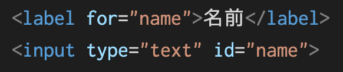
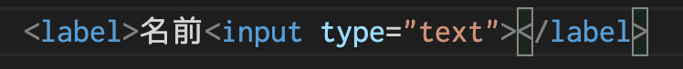

入力部品の説明にはplaceholder属性よりもlabelタグを使うのが望ましい。
読み上げブラウザは対応するlabelを読み上げるため、紐付けておくと親切。


ドロップダウンリストを作成するにはselectタグと子要素としてoptionタグを使う。
selectタグはsize属性で表示する行数の指定を、multipleタグで複数選択の指定を出来る。
初期値を指定したいときは、optionタグにselectdを入力すると初期値になる。
複数選択可能なものに使用する。
inputタグの属性をcheckboxにするとチェックボックスになる。
checked 属性を付けると予めチェックしておくことができる。
labelと組み合わせると名前を押すとチェックが入るので便利。
チェックボックスやラジオボタンとセットでよく使われる。
fieldsetタグで全体を囲む、legendタグでキャプションを付ける
一つだけ選択させたいときに使う。
inputタグの属性をradioにするとチェックボックスになる。
radioボタンの場合、これらは同じ項目に対する選択肢だということを明示する必要がある。
name属性を使って値を同じものに設定すると1つだけ選択するようにできる。
モダンなブラウザだけで使える部品。inputの属性を変更すると使用できる。
ただし、旧ブラウザでサポートされてないので現場ではそんなに使われていない
カラーピッカー
日付入力
数字入力
スライダー
inputタグを使う方法とbuttonタグを使う方法がある。
buttonタグを使えば、タグの中に画像を入れたりすることもできる。
disabled属性を付けることで入力部品を無効化できる。
入力された値をまとめて何らかのプログラムに送信したい場合、全体をformタグで囲ってあげればOK。